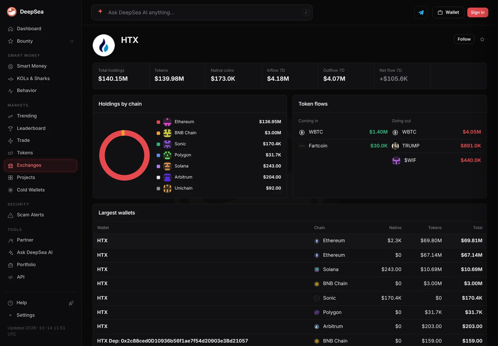
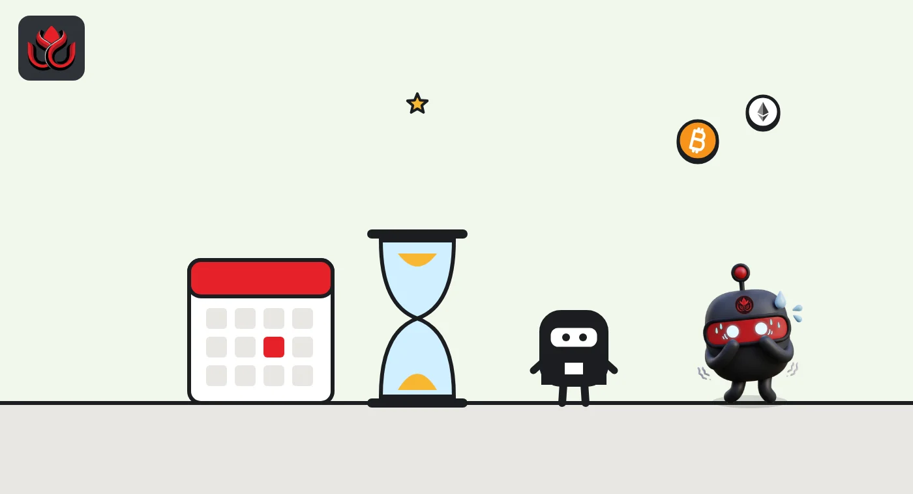
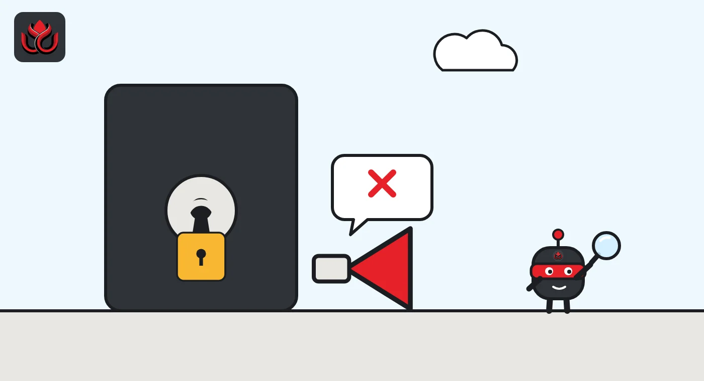

One year in the High Court: HTX settles with the FCA and promises to stop UK ads
HTX, formerly Huobi, has given court-backed undertakings not to unlawfully promote its crypto services to UK consumers, the UK regulator says. The case began in October 2025 and ended with a confidential settlement, no admission of wrongdoing and no announced fine.
Key points
- The FCA said on October 29, 2026, that Huobi Global S.A., the company behind HTX, gave High Court undertakings not to knowingly promote crypto services unlawfully to UK consumers.
- The promise covers HTX's website, apps and social media. It sits in a court order dated October 27, 2026. Settlement terms are confidential and HTX admits no wrongdoing.
- HTX is no longer active in the UK: no deposits, no new UK sign-ups. Existing users can check HTX's support page on withdrawing remaining assets.
 What DeepSea's data shows
What DeepSea's data shows
DeepSea tracks 17 HTX-labeled wallets on seven chains. On November 2 its HTX page showed $139.55 million in them, almost all on Ethereum, with $4.18 million in and $4.07 million out over seven days.
A separate entry labeled Huobi, HTX's former name, holds another $531.28 million. Those figures cover only the wallets DeepSea has labeled and say nothing about HTX's UK customers.

Data: DeepSea (desea.io), checked November 2, 2026, 7:55 a.m. ET.
What the FCA announced
The UK Financial Conduct Authority (FCA) said on October 29, 2026, that it has stopped crypto exchange HTX, formerly known as Huobi, from promoting its services to UK consumers. It did so through a settlement in the High Court, the FCA said.
Huobi Global S.A., the first defendant in the case, gave the court formal promises known as undertakings. Under them, it will not knowingly, directly or indirectly, communicate a financial promotion in breach of section 21 of the Financial Services and Markets Act 2000. Section 21 is the UK's core restriction on financial promotions, the ads and marketing that invite people to invest.
The undertakings reach the channels a crypto exchange actually uses to find customers: the HTX website, its software applications and its social media.
How the case ended
The undertakings are set out in a Tomlin order made by Deputy Master Holden and dated October 27, 2026. A Tomlin order is a common way to settle a case in the courts of England and Wales: the claim is put on hold on terms the parties have agreed, and either side can go back to court if those terms are broken.
The FCA and Huobi Global reached a settlement. Its terms are confidential. The FCA said the settlement is not an admission of liability or wrongdoing by Huobi Global or anyone else. The FCA did not announce a fine or any payment.
That means the outcome rests on the undertakings themselves. If Huobi Global broke them, the FCA could return to the same court rather than start a new case from scratch.

How the case unfolded
The case started on October 21, 2025, when the FCA began proceedings in the High Court's Business and Property Courts. The regulator said HTX had repeatedly failed to engage with it. After the proceedings started, HTX moved to exit the UK.
The FCA made the action public on February 10, 2026, in a release about illegal financial promotions, and has kept court documents on a dedicated page. It took just over a year from filing to the court order.
Timeline
FCA starts High Court proceedings against HTX entities
FCA announces its action against HTX over illegal financial promotions
Deputy Master Holden makes the Tomlin order containing Huobi Global's undertakings
FCA announces that it has stopped HTX's crypto promotions
The UK's full crypto regime brings a broad range of crypto activities inside the FCA's perimeter

Where HTX stands for UK users
According to the FCA, HTX is no longer active in the UK. Consumers cannot make deposits and new UK users cannot sign up. HTX has also committed not to target, solicit or actively seek UK consumers.
For people who still hold assets there, the FCA pointed to HTX's support page, which explains UK service availability and how to withdraw remaining assets. The regulator also told consumers to check a firm's status on its Firm Checker before using it.
Steve Smart, the FCA's executive director of enforcement and market oversight, put the message to other offshore firms plainly: "being based overseas does not put them beyond the reach of UK law."
Why this matters before the new UK regime
Crypto in the UK is still largely unregulated today. The FCA notes that only money laundering rules and the financial promotions rules apply, and that this remains the position until October 2027. That makes promotions one of the few tools the FCA has against offshore exchanges right now.
That changes next year. Regulations the Economic Secretary took through Parliament in February bring a broad range of crypto activities inside the FCA's perimeter from October 25, 2027, HM Treasury said in October, and the application window for firms opened on September 30, 2026. LC Insight covered how that gateway works. Exchanges that want UK customers after the switch will need full authorization. Those that do not will have to stay out.
LC Insight analysis
This section is our reading of the facts above, not a statement of fact.
- We think the method matters more than the result. The FCA got a court-backed promise covering websites, apps and social media without a trial or a fine, and that template is cheap to reuse against other offshore exchanges.
- The likely result is a cleaner split before October 2027: offshore exchanges either apply for UK authorization or leave, as HTX did. Running UK-facing marketing from abroad now carries a visible court risk.
- Confidential terms limit what the public can learn. Users and other firms cannot see what HTX agreed beyond the undertakings, so how well the order works will only show if the FCA goes back to court.
What's next
- Whether the FCA brings similar High Court cases against other offshore crypto exchanges
- Any return to court by the FCA if HTX promotions reappear in the UK
- How many overseas exchanges apply through the FCA's authorization gateway
Disclaimer. This article is based on public information and the sources listed below as of the update time shown. It is for information only and is not investment, legal or tax advice. Figures may change as companies and authorities publish new data.
Sources
- FCA, FCA stops HTX's crypto promotions (October 29, 2026)
- FCA, Tomlin order of Deputy Master Holden (October 27, 2026)
- FCA, FCA action against HTX for illegal financial promotions (February 10, 2026)
- FCA, HTX (Huobi) legal proceedings
- HM Treasury, Economic Secretary speech for UK Digital Assets Week (October 6, 2026)